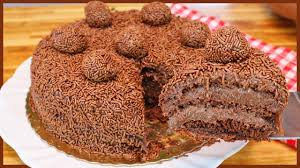

Bolo de Brigadeiro

Ingredientes
- 2 xícaras (chá) de açúcar
- 4 unidades de ovo (claras e gemas separadas)
- 3/4 xícara (chá) de óleo
- 3 colheres (sopa) de açúcar
- 2 latas de leite condensado
- 2 colheres (sopa) de margarina
- 200 gramas de granulado de chocolate
Modo de preparo
- Bate bem a massa, retire da batedeira ejunte as claras batidas em neve.
- Misture delicadamente e acrescente o fermento em pó.
- Leve para assar em forma untada e enfarinhada em forno, preaquecido a 180 °C.
- Prepare a calda: em uma panela, misture o licor de cacau, a água e 3 colheres (sopa) de açúcar e leve o fogo até ferver.